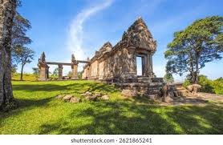

As a key edifice of the empire's spiritual life, Preah Vihear Temple was supported and modified by successive kings and thus bears elements of several architectural styles. It is unusual among Khmer temples in being constructed along a long north–south axis, rather than having the conventional rectangular plan with orientation toward the east. The temple gives its name to Preah Vihear province, in which it is located. In 1962, after a lengthy dispute between Cambodia and Thailand over ownership, the International Court of Justice in the Hague ruled that the temple is in Cambodia.[1] On 7 July 2008, Preah Vihear was listed as a UNESCO World Heritage Site.[2][3] This prompted an escalation in the dispute between Cambodia and Thailand over the temple, which was settled in favour of Cambodia by another ICJ ruling in 2011.Location The temple was built at the top of Poy Tadi, a steep cliff in the Dângrêk Mountain range that is the natural border between Cambodia and Thailand. The site is listed by Cambodia as being in Svay Chrum village, Kan Tout commune, in Choam Khsant District of Preah Vihear Province. It is 140 km from Angkor Wat and 418 km from Phnom Penh. The temple was listed by Thailand as being in Bhumsrol village of Bueng Malu subdistrict (now merged with Sao Thong Chai subdistrict), in Kantharalak district of Sisaket province. It is 110 km from the Mueang Sisaket District, in the center of Sisaket province. In 1962, the ICJ ruled that only the temple building belonged to Cambodia, while the direct way to access it was from Thailand,[4] but as of 2015, the only access is from Cambodia.
Read more Koh Ker: Archaeological Site of Ancient Lingapura or Chok Gargyar was a capital of the Khmer Empire between 921 and 944 CE. Partially hidden in a dense broad-leaf forest between the Dangrek and Kulen mountain ranges on a gently sloping hill some eighty kilometres northeast of Angkor, the archaeological site comprises numerous temples and sanctuaries with associated sculptures, inscriptions, and wall paintings, archaeological remains and hydraulic structures. Established by King Jayavarman IV in 921 CE, Koh Ker was one of two rival capitals of the Khmer Empire that co-existed between 921 and 928 CE – the other being Angkor – and the sole capital until 944 CE, after which the Empire’s political centre moved back to Angkor. Constructed in a single phase over a twenty-three-year period, the sacred city was believed to be laid out on the basis of ancient Indian concepts of the universe. Koh Ker demonstrated markedly unconventional city planning and architectural features, which were primarily the result of the combination of King Jayavarman IV’s grand political ambition and the two outstanding innovations that helped to materialise this ambition: the artistic expressions of the Koh Ker Style, and the construction technology using very large monolithic stone blocks. Although short-lived as a capital and thus acting only as an interlude in Khmer history, these innovations had a profound and lasting influence on urban construction and artistic expression in the region. Criterion (ii): The archaeological site of Koh Ker exhibits in an exceptional way the interchange of human values that resulted in the Koh Ker Style, a sculptural expression featuring bold, expressive imagery and a dynamic sense of movement that resulted from the fusion of Indian religious and artistic symbolism with local design concepts and artistic craftsmanship. The Koh Ker Style, though formed within a short period of twenty-three years in the 10th century, had an enduring influence on the artistic expression of the subsequent period of the Khmer Empire and other Southeast Asian countries.
Read more